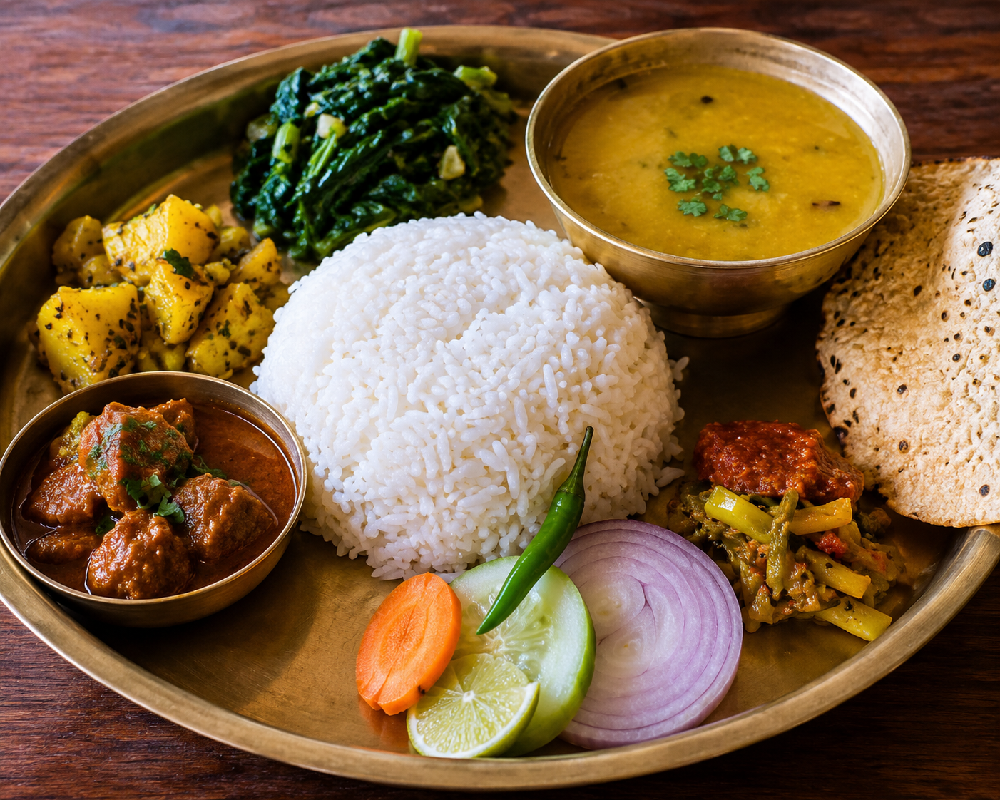
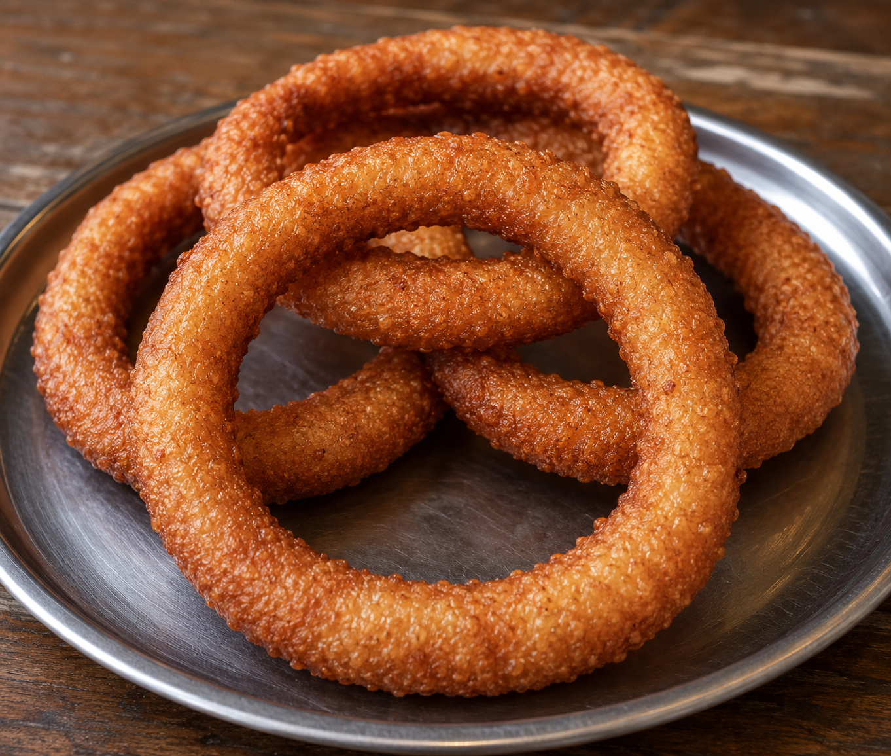

Main Course
Dal Bhat
Nepal's famous traditional meal made with steamed rice, lentils, vegetables, curry, and delicious pickles.
⏱ 40 min
⭐ 4.9
View Recipe

Snacks
Sel Roti
A crispy and delicious traditional Nepali rice bread commonly prepared during festivals and special occasions.
⏱ 30 min
⭐ 4.7
View Recipe

Snacks
Momo
Soft steamed dumplings filled with delicious ingredients and served with spicy Nepali tomato achar.
⏱ 45 min
⭐ 4.8
View Recipe